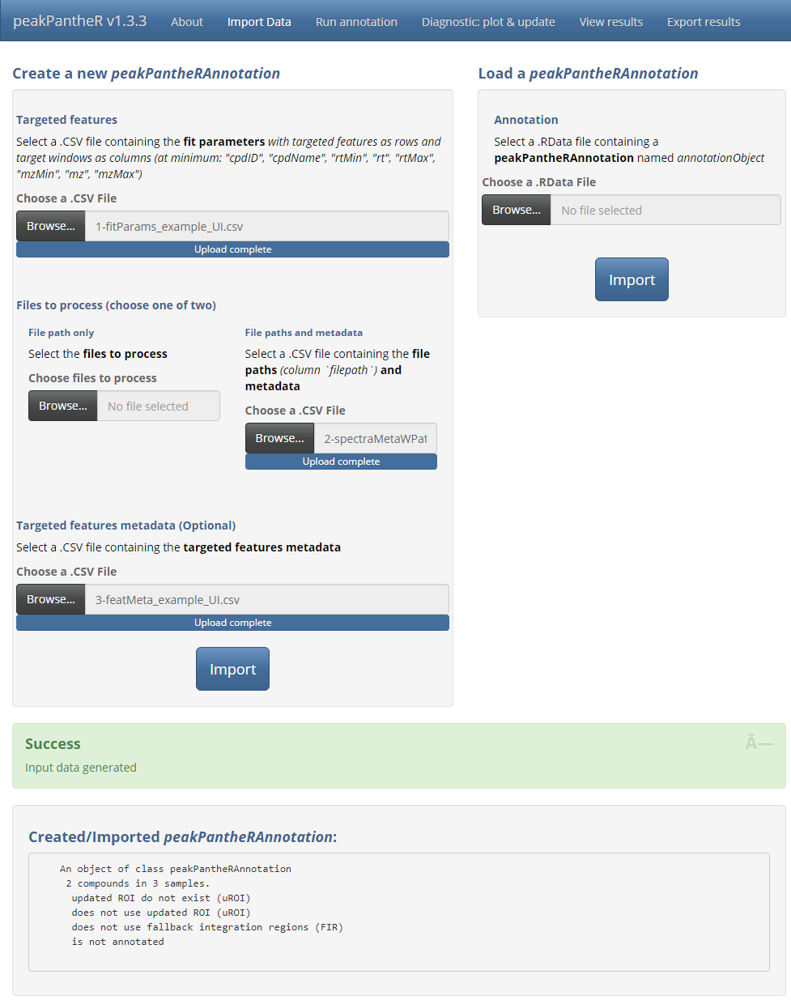
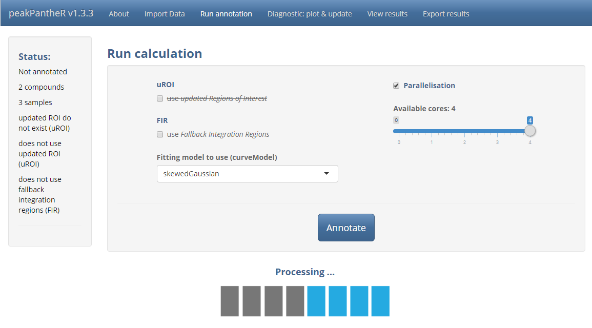
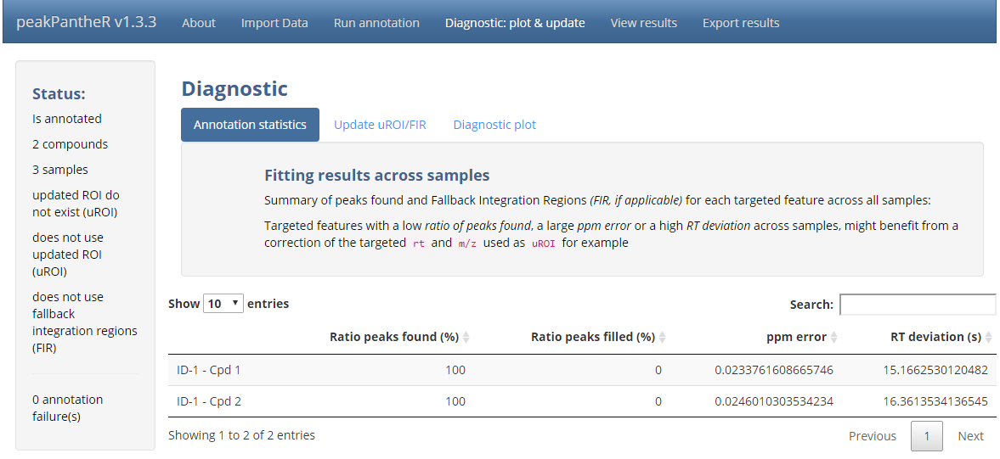
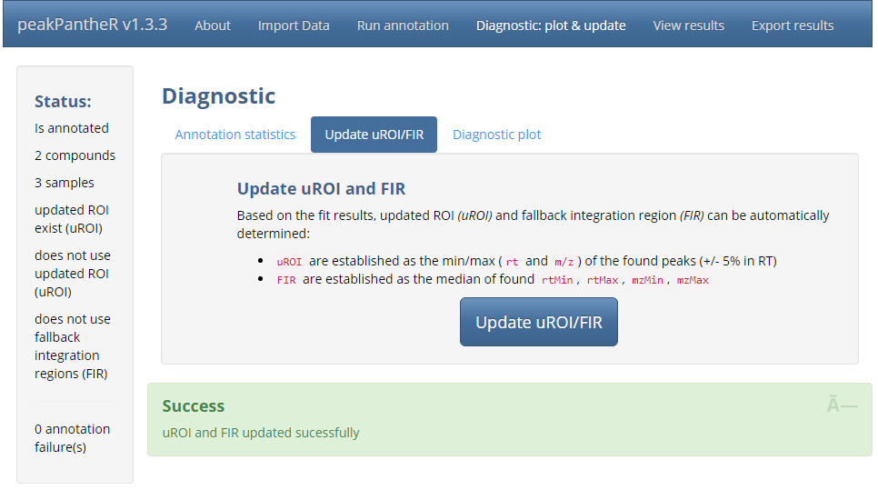
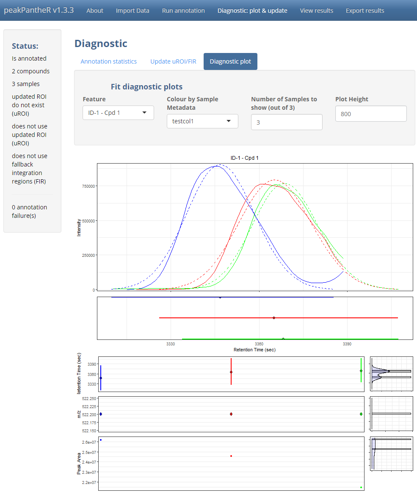
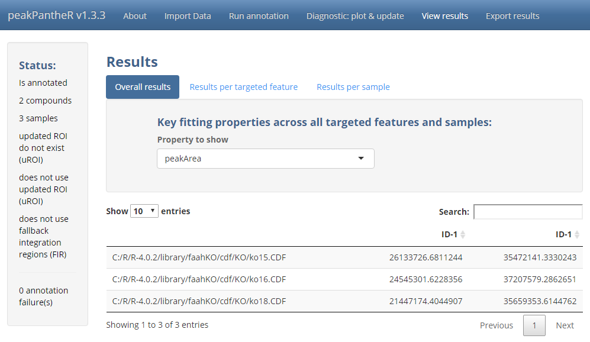
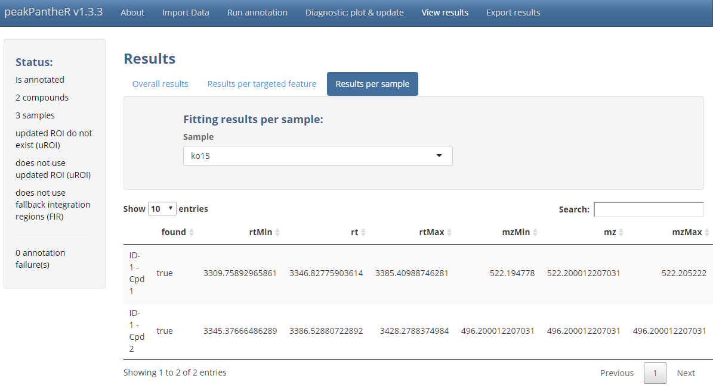

peakPantheR Graphical User Interface
Arnaud Wolfer
2020-10-11
Source:vignettes/peakPantheR-GUI.Rmd
peakPantheR-GUI.RmdPackage: peakPantheR
Authors: Arnaud Wolfer, Goncalo Correia
Introduction
The peakPantheR package is designed for the detection,
integration and reporting of pre-defined features in MS files
(e.g. compounds, fragments, adducts, …).
The graphical user interface implements all of
peakPantheR’s functionalities and can be preferred to
understand the methodology, select the best parameters on a subset of
the samples before running the command line, or to visually explore
results.
Using the faahKO raw MS dataset as an example, this vignette will:
- Detail the step-by-step use of the graphical user interface
- Apply the GUI to a subset of pre-defined features in the faahKO dataset
Abbreviations
-
ROI: Regions Of Interest
- reference RT / m/z windows in which to search for a feature
-
uROI: updated Regions Of Interest
- modifed ROI adapted to the current dataset which override the reference ROI
-
FIR: Fallback Integration Regions
- RT / m/z window to integrate if no peak is found
Example Data
This vignette employ the .csv or .RData
files generated from faahKO in
the vignette Getting Started with
peakPantheR.
Getting Started
The graphical user interface is started as follow:
library(peakPantheR)
peakPantheR_start_GUI(browser = TRUE)
# To exit press ESC in the command lineThe graphical interface is divided in 5 main tabs, Import Data, Run annotation, Diagnostic: plot & update, View results and Export results.
\(~\)
Graphical User Interface
Import
The first input format is using a .RData file containing
a peakPantheRAnnotation named annotationObject.
This object can be annotated or not, for example loading a previously
run annotation (see the Export section for more
details).

\(~\)
The second input format consists of multiple .csv files
describing the targeted features, spectra to process and corresponding
metadata (optional). Spectra can also be directly selected on disk.

\(~\)
Run Annotation
With the targeted features and spectra defined, Run
annotation handles the fitting parameter selection as well as
downstream computation. First the use of updated regions of interest
(uROI) and fallback integration regions (FIR)
can be selected if available. If uROI haven’t been
previously defined, the option will be crossed out. Secondly the curve
fitting model to use can be selected from the interface. Finally
Parallelisation enables the selection of the number of CPU
cores to employ for parallel file access and processing.

\(~\)
Diagnostic: plot & update
Note:
The targeted regions of interest (
ROI) should represent a good starting point for feature integration, however it might be necessary to refine these boundary box to the specific analytical run considered. This ensures a successful integration over all the spectra irrespective of potential chromatographic equilibration differences or retention time drift.Updated regions of interest (
uROI) can be defined and will supplantROI.uROIcan for example be manually defined to “tighten” or correct theROIand avoid erroneous integration. Another use ofuROIis to encompass the integration region in each sample throughout the run without targeting any excess spectral region that would interfere with the correct analysis.Fallback integration regions (
FIR) are defined as spectral regions that will be integrated (i.e. integrating the baseline signal) when no successful chromatographic peak could be detected in a sample.FIRshouldn’t reasonably stretch further than the minimum and maximum bound (RT / m/z) of all found peaks across all samples for a given feature: this way no excess signal will be considered.
\(~\)
With all features integrated in all samples,
Diagnostic provide tools to assess the quality of the
peak integration and refine integration boundaries by setting
uROI and FIR adapted to the specific
chromatographic run being processed.
\(~\)
Annotation statistics summarises the success in
integrating each targeted feature. The
ratio of peaks found (%),
ratio of peaks filled (%) and the average
ppm error and RT deviation (s) will highlight
a feature that wasn’t reliably integrated over a large number of
samples. Visual evaluation (see below) and the adjustment of
uROI or FIR might assist in tuning the
integration of said feature.

\(~\)
Update uROI/FIR automatically sets uROI and
FIR for each feature based on the RT /
m/z boundaries of the peaks successfully integrated.

\(~\)
Diagnostic plot offer a visualisation of a selected
feature across all samples in order of analysis. This visualisation
highlights the fitting of the feature in each sample, as well as the
change in RT / m/z (of the peak apex) and peak area
through time. Samples can be automatically coloured based on a
sample metadata column.

\(~\)
Once uROI and FIR are successfully set, it
is possible to go back to the Run annotation tab and
refit all features in all samples (Note: this will overwrite the
current results).
\(~\)
View results
If the features integration are satisfactory, View results regroups all the integration results
\(~\)
Overall results displays a fitting property for all
targeted features (as columns) and all spectra (as
rows).

\(~\)
Results per targeted feature displays all fitting
properties (as columns) for all samples (as rows) for
a selected targeted feature.

\(~\)
Results per sample displays all fitting properties
(as columns) for all targeted features (as rows) for a
selected sample.

\(~\)
Export
The Export tab manages the saving of input parameters, annotation results and automated reporting.
The peakPantheRAnnotation in it’s current state can be
saved as a .RData file which can subsequently be reloaded.
The .csv files defining the current analysis can also be
exported to reproduce the current processing.
All diagnostic plots from the Diagnostic tab can be
automatically saved to disk for rapid evaluation. This can be executed
in parallel if a large number of plots have to be generated.
Finally each fitting property can be saved as a .csv
file with all samples as rows and all targeted features as
columns. Additionally a summary table will present the
integration success rate for each targeted feature.
\(~\)
Final Note
If a very high number of targeted features and samples are to be
processed, peakPantheR’s command line functions are more
efficient, as they can be integrated in scripts and the reporting
automated.
\(~\)
Session Information
#> ─ Session info ───────────────────────────────────────────────────────────────
#> setting value
#> version R version 4.3.2 (2023-10-31 ucrt)
#> os Windows 11 x64 (build 22621)
#> system x86_64, mingw32
#> ui RTerm
#> language en
#> collate English_United Kingdom.utf8
#> ctype English_United Kingdom.utf8
#> tz Europe/Paris
#> date 2023-11-05
#> pandoc 3.1.1 @ C:/Program Files/RStudio/resources/app/bin/quarto/bin/tools/ (via rmarkdown)
#>
#> ─ Packages ───────────────────────────────────────────────────────────────────
#> package * version date (UTC) lib source
#> abind 1.4-5 2016-07-21 [2] CRAN (R 4.3.0)
#> affy 1.78.2 2023-07-16 [2] Bioconductor
#> affyio 1.70.0 2023-04-25 [2] Bioconductor
#> Biobase * 2.60.0 2023-04-25 [2] Bioconductor
#> BiocGenerics * 0.46.0 2023-04-25 [2] Bioconductor
#> BiocManager 1.30.22 2023-08-08 [2] CRAN (R 4.3.2)
#> BiocParallel * 1.34.2 2023-05-22 [2] Bioconductor
#> BiocStyle * 2.28.1 2023-09-14 [2] Bioconductor
#> bitops 1.0-7 2021-04-24 [2] CRAN (R 4.3.0)
#> bslib 0.5.1 2023-08-11 [2] CRAN (R 4.3.2)
#> cachem 1.0.8 2023-05-01 [2] CRAN (R 4.3.1)
#> callr 3.7.3 2022-11-02 [2] CRAN (R 4.3.1)
#> cli 3.6.1 2023-03-23 [2] CRAN (R 4.3.1)
#> clue 0.3-65 2023-09-23 [2] CRAN (R 4.3.1)
#> cluster 2.1.4 2022-08-22 [3] CRAN (R 4.3.2)
#> codetools 0.2-19 2023-02-01 [3] CRAN (R 4.3.2)
#> colorspace 2.1-0 2023-01-23 [2] CRAN (R 4.3.1)
#> crayon 1.5.2 2022-09-29 [2] CRAN (R 4.3.1)
#> DelayedArray 0.26.7 2023-07-28 [2] Bioconductor
#> DEoptimR 1.1-3 2023-10-07 [2] CRAN (R 4.3.1)
#> desc 1.4.2 2022-09-08 [2] CRAN (R 4.3.1)
#> devtools 2.4.5 2022-10-11 [2] CRAN (R 4.3.2)
#> digest 0.6.33 2023-07-07 [2] CRAN (R 4.3.1)
#> doParallel 1.0.17 2022-02-07 [2] CRAN (R 4.3.1)
#> dplyr 1.1.3 2023-09-03 [2] CRAN (R 4.3.1)
#> DT 0.30 2023-10-05 [2] CRAN (R 4.3.1)
#> ellipsis 0.3.2 2021-04-29 [2] CRAN (R 4.3.1)
#> evaluate 0.23 2023-11-01 [2] CRAN (R 4.3.2)
#> faahKO * 1.40.0 2023-04-27 [2] Bioconductor
#> fansi 1.0.5 2023-10-08 [2] CRAN (R 4.3.2)
#> fastmap 1.1.1 2023-02-24 [2] CRAN (R 4.3.1)
#> foreach 1.5.2 2022-02-02 [2] CRAN (R 4.3.1)
#> fs 1.6.3 2023-07-20 [2] CRAN (R 4.3.1)
#> generics 0.1.3 2022-07-05 [2] CRAN (R 4.3.1)
#> GenomeInfoDb 1.36.4 2023-10-02 [2] Bioconductor
#> GenomeInfoDbData 1.2.10 2023-08-06 [2] Bioconductor
#> GenomicRanges 1.52.1 2023-10-08 [2] Bioconductor
#> ggplot2 3.4.4 2023-10-12 [2] CRAN (R 4.3.2)
#> glue 1.6.2 2022-02-24 [2] CRAN (R 4.3.1)
#> gtable 0.3.4 2023-08-21 [2] CRAN (R 4.3.1)
#> highr 0.10 2022-12-22 [2] CRAN (R 4.3.1)
#> htmltools 0.5.7 2023-11-03 [2] CRAN (R 4.3.2)
#> htmlwidgets 1.6.2 2023-03-17 [2] CRAN (R 4.3.1)
#> httpuv 1.6.12 2023-10-23 [2] CRAN (R 4.3.2)
#> impute 1.74.1 2023-05-02 [2] Bioconductor
#> IRanges 2.34.1 2023-06-22 [2] Bioconductor
#> iterators 1.0.14 2022-02-05 [2] CRAN (R 4.3.1)
#> jquerylib 0.1.4 2021-04-26 [2] CRAN (R 4.3.1)
#> jsonlite 1.8.7 2023-06-29 [2] CRAN (R 4.3.1)
#> knitr 1.45 2023-10-30 [2] CRAN (R 4.3.2)
#> later 1.3.1 2023-05-02 [2] CRAN (R 4.3.1)
#> lattice 0.22-5 2023-10-24 [3] CRAN (R 4.3.2)
#> lifecycle 1.0.3 2022-10-07 [2] CRAN (R 4.3.1)
#> limma 3.56.2 2023-06-04 [2] Bioconductor
#> magrittr 2.0.3 2022-03-30 [2] CRAN (R 4.3.1)
#> MALDIquant 1.22.1 2023-03-20 [2] CRAN (R 4.3.1)
#> MASS 7.3-60 2023-05-04 [3] CRAN (R 4.3.2)
#> MassSpecWavelet 1.66.0 2023-04-25 [2] Bioconductor
#> Matrix 1.6-1.1 2023-09-18 [3] CRAN (R 4.3.2)
#> MatrixGenerics 1.12.3 2023-07-30 [2] Bioconductor
#> matrixStats 1.0.0 2023-06-02 [2] CRAN (R 4.3.1)
#> memoise 2.0.1 2021-11-26 [2] CRAN (R 4.3.1)
#> mime 0.12 2021-09-28 [2] CRAN (R 4.3.0)
#> miniUI 0.1.1.1 2018-05-18 [2] CRAN (R 4.3.1)
#> MsCoreUtils 1.12.0 2023-04-25 [2] Bioconductor
#> MsFeatures 1.8.0 2023-04-25 [2] Bioconductor
#> MSnbase * 2.26.0 2023-04-25 [2] Bioconductor
#> multtest 2.56.0 2023-04-25 [2] Bioconductor
#> munsell 0.5.0 2018-06-12 [2] CRAN (R 4.3.1)
#> mzID 1.38.0 2023-04-25 [2] Bioconductor
#> mzR * 2.34.1 2023-06-19 [2] Bioconductor
#> ncdf4 1.21 2023-01-07 [2] CRAN (R 4.3.0)
#> pander * 0.6.5 2022-03-18 [2] CRAN (R 4.3.2)
#> pcaMethods 1.92.0 2023-04-25 [2] Bioconductor
#> peakPantheR * 1.16.0 2023-11-04 [1] Bioconductor
#> pillar 1.9.0 2023-03-22 [2] CRAN (R 4.3.1)
#> pkgbuild 1.4.2 2023-06-26 [2] CRAN (R 4.3.1)
#> pkgconfig 2.0.3 2019-09-22 [2] CRAN (R 4.3.1)
#> pkgdown 2.0.7 2022-12-14 [2] CRAN (R 4.3.2)
#> pkgload 1.3.3 2023-09-22 [2] CRAN (R 4.3.1)
#> plyr 1.8.9 2023-10-02 [2] CRAN (R 4.3.1)
#> preprocessCore 1.62.1 2023-05-02 [2] Bioconductor
#> prettyunits 1.2.0 2023-09-24 [2] CRAN (R 4.3.1)
#> processx 3.8.2 2023-06-30 [2] CRAN (R 4.3.1)
#> profvis 0.3.8 2023-05-02 [2] CRAN (R 4.3.1)
#> promises 1.2.1 2023-08-10 [2] CRAN (R 4.3.1)
#> ProtGenerics * 1.32.0 2023-04-25 [2] Bioconductor
#> ps 1.7.5 2023-04-18 [2] CRAN (R 4.3.1)
#> purrr 1.0.2 2023-08-10 [2] CRAN (R 4.3.1)
#> R6 2.5.1 2021-08-19 [2] CRAN (R 4.3.1)
#> ragg 1.2.6 2023-10-10 [2] CRAN (R 4.3.2)
#> RANN 2.6.1 2019-01-08 [2] CRAN (R 4.3.1)
#> RColorBrewer 1.1-3 2022-04-03 [2] CRAN (R 4.3.0)
#> Rcpp * 1.0.11 2023-07-06 [2] CRAN (R 4.3.1)
#> RCurl 1.98-1.13 2023-11-02 [2] CRAN (R 4.3.2)
#> remotes 2.4.2.1 2023-07-18 [2] CRAN (R 4.3.1)
#> rlang 1.1.2 2023-11-04 [2] CRAN (R 4.3.2)
#> rmarkdown 2.25 2023-09-18 [2] CRAN (R 4.3.2)
#> robustbase 0.99-0 2023-06-16 [2] CRAN (R 4.3.1)
#> rprojroot 2.0.3 2022-04-02 [2] CRAN (R 4.3.1)
#> rstudioapi 0.15.0 2023-07-07 [2] CRAN (R 4.3.1)
#> S4Arrays 1.0.6 2023-08-30 [2] Bioconductor
#> S4Vectors * 0.38.2 2023-09-22 [2] Bioconductor
#> sass 0.4.7 2023-07-15 [2] CRAN (R 4.3.1)
#> scales 1.2.1 2022-08-20 [2] CRAN (R 4.3.1)
#> sessioninfo 1.2.2 2021-12-06 [2] CRAN (R 4.3.1)
#> shiny 1.7.5.1 2023-10-14 [2] CRAN (R 4.3.2)
#> shinycssloaders 1.0.0 2020-07-28 [2] CRAN (R 4.3.2)
#> stringi 1.7.12 2023-01-11 [2] CRAN (R 4.3.0)
#> stringr 1.5.0 2022-12-02 [2] CRAN (R 4.3.1)
#> SummarizedExperiment 1.30.2 2023-06-06 [2] Bioconductor
#> survival 3.5-7 2023-08-14 [3] CRAN (R 4.3.2)
#> systemfonts 1.0.5 2023-10-09 [2] CRAN (R 4.3.2)
#> textshaping 0.3.7 2023-10-09 [2] CRAN (R 4.3.2)
#> tibble 3.2.1 2023-03-20 [2] CRAN (R 4.3.1)
#> tidyselect 1.2.0 2022-10-10 [2] CRAN (R 4.3.1)
#> urlchecker 1.0.1 2021-11-30 [2] CRAN (R 4.3.1)
#> usethis 2.2.2 2023-07-06 [2] CRAN (R 4.3.1)
#> utf8 1.2.4 2023-10-22 [2] CRAN (R 4.3.2)
#> vctrs 0.6.4 2023-10-12 [2] CRAN (R 4.3.2)
#> vsn 3.68.0 2023-04-25 [2] Bioconductor
#> xcms * 3.22.0 2023-04-25 [2] Bioconductor
#> xfun 0.41 2023-11-01 [2] CRAN (R 4.3.2)
#> XML 3.99-0.15 2023-11-02 [2] CRAN (R 4.3.2)
#> xtable 1.8-4 2019-04-21 [2] CRAN (R 4.3.1)
#> XVector 0.40.0 2023-04-25 [2] Bioconductor
#> yaml 2.3.7 2023-01-23 [2] CRAN (R 4.3.0)
#> zlibbioc 1.46.0 2023-04-25 [2] Bioconductor
#>
#> [1] C:/Temp/RtmpmeNQce/temp_libpath16f061135772
#> [2] C:/R/win-library/4.3
#> [3] C:/R/R-4.3.2/library
#>
#> ──────────────────────────────────────────────────────────────────────────────